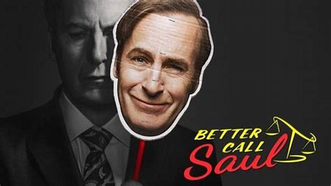
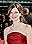

- You
- The boys
- bollonyai spegatt
- Kincses bolygó
- Ready Player One
- Better Call Saul 


- MAU MAKAN APA? EPISODE 1: DEUS EX MACHINA PILOT
- Mentő expedíció
- Ready Player One
Kedvenc recept:pizza

- Encanto
- Titanic
- Fnaf: The movie
Breaking bad
Szereplők
- Bryan Cranston ... Walter White
 Anna Gunn ... Skyler White
Anna Gunn ... Skyler White Aaron Paul ... Jesse Pinkman
Aaron Paul ... Jesse Pinkman-  Betsy Brandt ... Marie Schrader
 RJ Mitte ... Walter White, Jr.
RJ Mitte ... Walter White, Jr.- Dean Norris ... Hank Schrader
 Bob Odenkirk ... Saul Goodman
Bob Odenkirk ... Saul Goodman

Top Gun
Szereplők
- Maverick.....Tom Cruise
- Val Kilmer...Iceman
- Kelly McGillis...Charlotte
- Rick Rossovich...Slider


Kedvenc sorozata: Snowfall

gyros